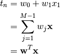

Bayesian Linear Regression Exercises¶
Using the Bayesian linear regression example as a tool lets recreate the analysis in R.
Create a sweave file complete with pseudo-code¶
Generally each analysis should have its own directory– it make sense if we want to bundle the methods, data and report.
Create a template and use R to print "Hello World"
Add a few sentences about linear regression complete with the following formula

- Here are the commands you will need:
\usepackage{amsmath}
subscript x_{i} superscript x^{i}
\sum^{}_{}
\mathbf{}
Note
what if you use align*? or if you put the & at the beginning of each line?
Use pseudo-code to list the rest of the steps * Simulate data * Save the data to file * Edit your model file (*.bug) * Edit your inits file or create your inits file within R and dump * Edit your cmds file (*.cmd) * Run your sampler * Plot the Chains * Plot the Lines
Simulate the data
- use rnorm and runif to generate random numbers for the normal and uniform distributions
- look at the FishersExactTest.rnw example for how to make functions
Save the data to file. The following code will help you figure it out
x <- rnorm(10) t <- rnorm(10) xt <- data.frame(x,t) dump("xt",file="xt.R") rm(xt) source(file="xt.R") xtEdit/create your model, inits and command files
First try this with the provided files. Then if you wish the model and command files can be written to file from your sweave documents using the cat and sink commands. The inits file can be written with dump.
sink("example-sink.txt") cat("model{ # priors for (i in1:nGroups){ w0[i] ~ dnorm(0,0.001) w1[i] ~ dnorm(0,0.001) } } ",fill=TRUE) sink()Run your sampler
~$ jags line-reg-simple.cmdPlot the chains and plot the lines
This one is for you.